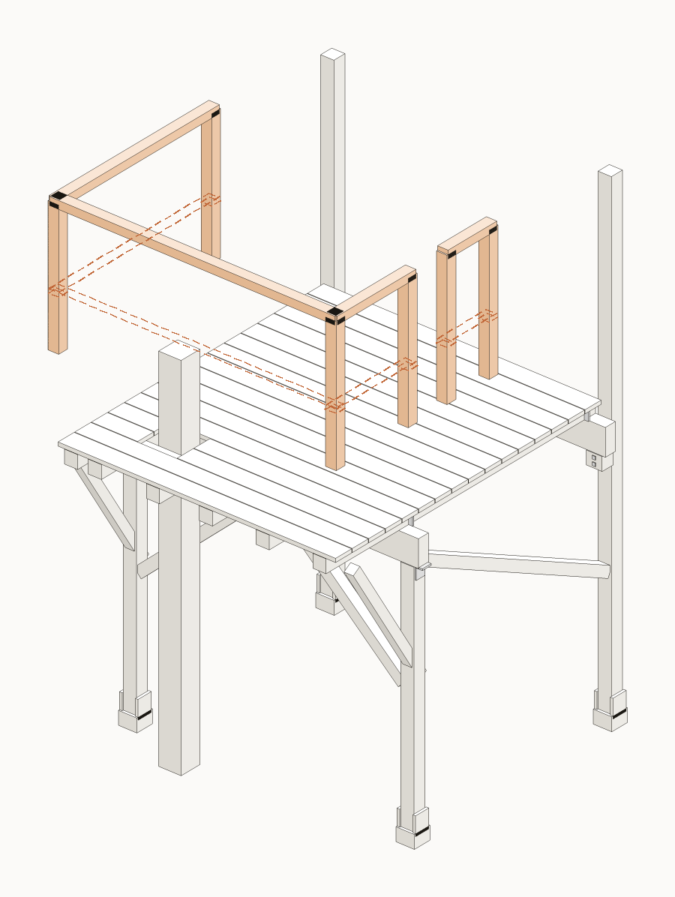
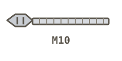

FISA 11 / 11
Balustrada si poarta

ST stalpGR grindaJO joistaDL dusumeaPO politaC1/C2 coltarCF diagonala
Piese pentru aceasta etapa

SB~7
Stalpisor 58x58
stalpisor 58x58, de cadru
SP~24
Sipci balustrada
sipci, gol <9 cm
MC~7 m
Mana curenta
mana curenta sus

BM~12
Bulon M10
bulon M10 in cadru
Scule
BormasinaNivelaFierastrau
Pas cu pas
cap surub (fata vazuta)surub/piulita ascuns (pe spate)directia de insurubareoblic = la unghi (toe-screw)
Folosim suruburi + buloane, nu cuie. (Singurul cui e distantierul de 5 mm la dusumea.)
1
Monteaza stalpisorii balustradei (SB, 58x58), bulonati de CADRU (joiste/grinda), nu de dusumea. Jur-imprejur, inclusiv pe nasul consolei.
zoom · cum se prinde
!
CRITIC — Stalpisorii se prind de cadru (joiste/grinda), nu de dusumea.
2
Pune mana curenta sus, la 1 m inaltime, pe tot conturul.
zoom · cum se prinde
!
CRITIC — Mana curenta exact la 1 m, pe tot conturul.
3
Umple cu sipci (SP), cu goluri sub 9 cm (un copil nu trebuie sa incapa sau sa se catere usor).
zoom · cum se prinde
!
CRITIC — Goluri sub 9 cm peste tot.
4
Lasa o poarta pe partea S3 (opusa mesei-copac), unde urca scara. Testeaza balustrada impingand cu putere.
!
CRITIC — Poarta pe S3; testeaza toata balustrada impingand cu putere.
Gata cand
- Mana curenta la 1 m de la dusumea
- Goluri sub 9 cm peste tot
- Poarta pe S3
- Stalpisori bulonati de cadru, testati prin impingere